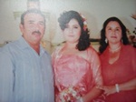
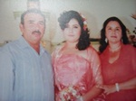

FLORA CAROLINA MORENO CAMACHO


PRIMERA COMUNIÓN:
Después de 2 año yendo los sábados a catecismo, y a la edad de 9 años realice mi primera comunión

GRADUACIÓN PRIMARIA:
Mi escolaridad en la primaria duró 6 años estando en la generación 2002-2008 egresando con un promedio de 9.1, yo estudié en la primaria "Vicente Lombardo Toledano" del ejido La Constancia, mis padrinos fueron mi hermana Edith y mi primo Enrique.


VIAJES:
Me considero una persona muy afortunada que ha viajado tanto de forma personal, familiar y disciplinaria (concursos), el viaje a puerto Vallarta
es uno de los más interesantes porque ese fue familiar y visitamos muchos lugares, dentro de ellos está el museo de cera que tenía un terminator
que me daba mucho miedo y mi madre insistió en que nos tomáramos una foto mi hermana y yo a un lado de la figura, fue algo escalofriante en ese tiempo,
ahora lo recuerdo y me da risa.
 

QUINCE AÑOS:
Quizás no seamos una familia de mucho dinero pero cuando menos hay, más creatividad sale, a mí no me iban a hacer una fiesta en grande como la de mis hermanas porque cuando me toco cumplirlos a mí no había suficiente, mi mamá dijo que me haría una cenita, pero esa cenita fue creciendo con el apoyo de mi familia y hasta la fecha ha sido la fiesta más disfrutada por todos los miembros de ella.
GRADUACIÓN SECUNDARIA:
Mi escolaridad en la secundaria duró 3 años estándo en la generación 2008-2011 egresando con un promedio de 9.3, yo estudié en la secundaria "José Jesús Rodriguez Torres" del ejido La Constancia, mis padrinos fueron mi papá y mi tia.